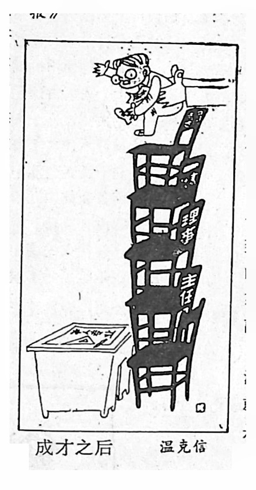

温克信 《人事》1987年第5期（总第20期），第44页
成才之后
After Becoming Talent
- Text in the drawing
- 理事 / 主任 (other labels illegible)
Council member / Director (other labels illegible) - Description
- A man has left his desk and papers behind and climbs a teetering tower of chairs, each labeled with a post — council member, director — scrambling for yet another at the top.
- Note
- Once a specialist was recognized as “talent” (成才), he was often loaded with administrative posts and honorary positions that kept him from his own work.
- Artist
- Wen Kexin 温克信
- Published in
- 《人事》1987年第5期（总第20期）, p. 44
- Themes
- Talent and its neglect · Promotion · Bureaucratism

Cite
Wen Kexin, “成才之后” [After Becoming Talent], Renshi (Personnel) 《人事》, 1987, no. 5, p. 44.